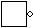

Inputs and outputs
IEDLS implements input and output pins. They are components with a boolean value, and an optional name.
Icon
Name
Workings
Input pin
Used to input values into your circuit. Simulation is mostly done by alt-clicking an input pin to change its value.

Output pin
Used to output values out of your circuit